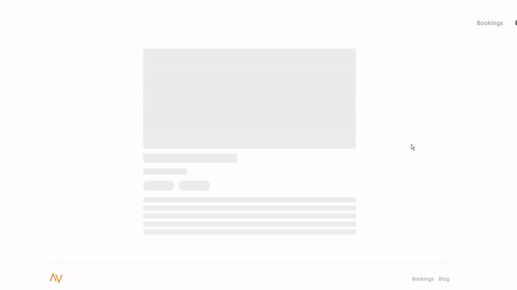
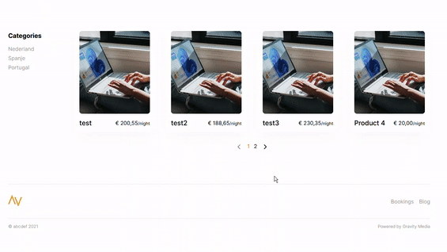

Front-end componenten
Deze pagina is een overzicht van de componenten van de front-end.
Functionele componenten
Functionele componenten zijn eigenlijk componenten die vaker gebruikt kunnen worden zoals Image, Pagination of Carousel.
Image
De component Image zorgt er voor dat er een placeholder komt voor een afbeelding als deze nog niet geladen is. De placeholder verdwijnt zodra de afbeelding volledig geladen is en op die zelfde plek verschijnt dan een img tag.
Hoe te gebruiken:
import { Image } from '../../functions/Image'; ... <Image src={URL} alt={ALT} fit="cover" />
Resultaat:

Pagination
De component Pagination zorgt er voor dat alle producten of blogitems automatisch worden opgedeeld in pagina's. Bij deze component is het noodzakelijk om de items per pagina, totale items, de items zelf en de component waar het uiteindelijk de data moet invullen mee te sturen.
Hoe te gebruiken:
// Pagination inladen import { Pagination } from '../../components/functions/Pagination'; // Component inladen waarin de data gevuld moet worden import { SimpleProductItem } from '../../components/eCommerce/products/thumbnails/SimpleProductItem'; // items array wordt ingeladen via Socket.io const TotalItems = 8; // Pagination oproepen <Pagination itemsPerPage={TotalItems} totalItems={items.length} items={items} Component={SimpleProductItem} />
Resultaat:

Carousel
Carousel zorgt er voor dat de afbeeldingen van bijvoorbeeld producten mooi worden weergegeven in een carousel. De component Carousel maakt ook gebruik van de component Image.
Hoe te gebruiken:
// Importeer de component import { Carousel } from '../../../functions/Carousel'; // Geef een array mee met de afbeeldingen <Carousel images={product.images} fit="contain" />
Resultaat: